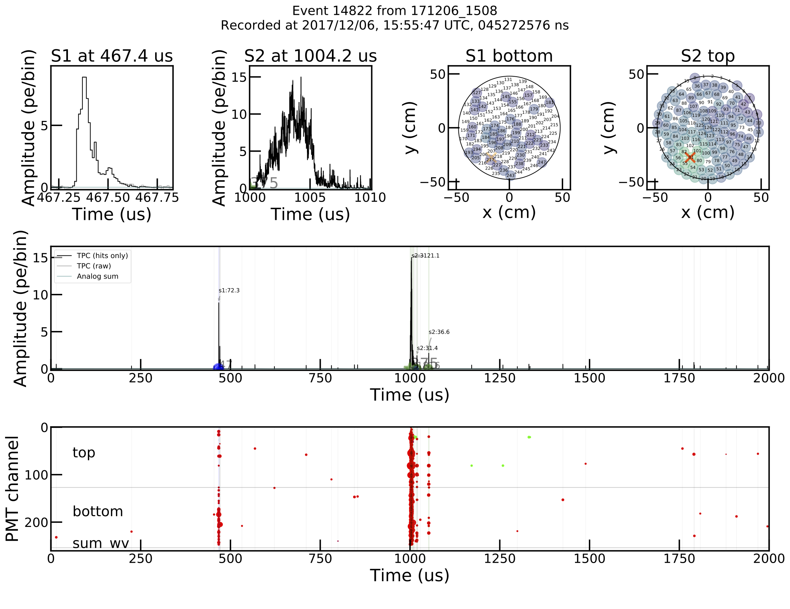
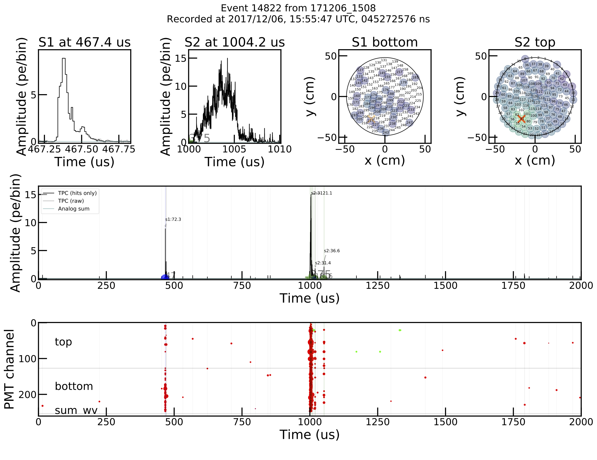

Longest directly measured lifetime measured!
April, 2018: We discovered a new nuclear process called 'double-electron capture' which got us the cover of Nature. Check out our press release!
World-leading dark matter detector!
Sept, 2018: Within XENON1T, our colleagues and I published the world-leading results for trying to directly-detecting particle dark matter in Physical Review Letters. It is the time that a tonne-scale detector has successfully completed such a search. We ruled out some dark matter models, but the discovery still remains to be made!
Join the team?
Like the Universe, we are expanding! Specifically, Postdoctoral Researchers, Graduate and Undergraduate students interested in the intersection of Data Science Technologies and Particle Physics should contact us below.
XENONnT
The Universe's structure is scaffolded by a cosmic web of dark matter. Dark matter is travelling through you right now but the interactions are so weeak that you cannot detect it. The next-generation of dark matter detectors is currently under construction to be sensitive enough to make this discovery.
Dark matter and neutrinos. Build detector and analyze.
We work at the intersection between Cosmology and Particle Physics, specifically related to dark matter and neutrinos. The nature of dark matter is one of the biggest questions in modern physics. We build and analyze detectors that aim to discover particle dark matter. Furthermore, the same technology can be used to study the nature of the neutrinos through a process called neutrinoless double-beta decay. The Rice group has been a part of the XENON collaboration since its inception building xenon time-projection chambers in the Gran Sasso Laboratory in Italy. This includes developing this technology with XENON10, demonstrating the dark-matter technology in XENON100, the current leader XENON1T, and the future XENONnT. The interests in the group range from developing the high-voltage electrodes to operations to developing the software used for acquiring, processing, and analyzing the experimental data (leveraging leading Big Data technologies in our cyberinfrastructure).
Prof. Christopher Tunnell
Assistant Professor of Physics and Astronomy and Computer Science. Computational astroparticle physicist and former XENON1T analysis coordinator specialized in data analysis, data acquisition, and cyberinfrastructure. Hired through the Rice Data Science Initiative. His background includes neutrino (solar, reactor, sterile, beam), collider, and accelerator physics. However, his unifying interest is cyberinfrastructure: how we handle, reconstruct, and analyze the petabytes of data created by such instruments. Recipient of the 2016 Breakthrough Prize.(Publication)
Prof. Petr Chaguine
Research Assistant Professor of Physics and Astronomy. He is a world-leading on the large electrodes, leading these efforts for XENON. Dr. Chaguine will soon be the XENONnT commissioning manager, responsible for getting our upgrade XENONnT build and taking science data. Beyond XENON, as a long established experimental-particle-physics career, bringing this detector knowledge to the hunt of dark matter. (Publications)
Dr. Aaron Higuera
Research Scientists in Physics and Astronomy. Background in neutrino physics, particularly interested in neutrionless double-beta decay. DIDACTS.
Dr. Junji Naganoma
Researcher in Physics and Astronomy. Based at the Gran Sasso Laboratory as the XENON1T Operations Manager. Dr Naganoma's day-to-day job is to quite literally to lead operations of the most sensitive dark matter experiment and serve as a nexus point between all aspects of the experimental hardware. (Publications)
Dr. Venkat Roy
Postdoc. PhD in Electrical and Computer Engineering from TU Delft. Visiting scientist from INSPIRE Lab at Rutgers and part of our DIDACTS project.
Sophia Andaloro
PhD Student in Physics and Astronomy. Second year. National Nuclear Security Administration Stockpile Stewardship Graduate Fellow. NSF GRF Awardee 2020. Works on XENONnT, NEST, and the frontiers of machine learning.
Shixiao Liang
PhD Student in Physics and Astronomy. Second year student working within DIDACTS to push the frontiers of reconstruction using graphs, with the science target of dark matter and neutrinoless double-beta decay.
Hongyi Liu
PhD Student in Physics and Astronomy. Working within the software and computing group.
Ivy Li
PhD Student in Physics and Astronomy. First year working on an unsupervised learning project with the statistics department. Fulbright Fellow 2020.
Alejandro Oranday
Undergraduate in Physics and Astronomy. A Rice SURF Fellow working on understanding how manifold learning can be applied to XENON1T data to understand detector response and position reconstruction.
Chloe Liebenthal
Undergraduate in Physics and Astronomy. A Rice SURF Fellow working to simulate scintillation, ionization, and electroluminescence processes in liquid noble elements, such as the xenon used in the XENON1T detector.
Shuaicheng (Sam) Li
Research Software Engineer. Bachelors Graduate of Rice Electrical and Computer Engineering. Working on improving signal processing for XENONnT.
Yiyang 'Skylar' Xu
Undergraduate in Computer Science. Working with SCIMMA and SNEWS to implement an alert system for detecting supernovas.
Yingfan Chen
Undergraduate in Computer Science. Developing a web application to assist the research group in analyzing waveform data.
Yvette Martinez
Undergraduate in Computer Science. Working on web development related to Identity and Access Management.

Diep Hoang
Undergraduate in Computer Science. Working on COVID Community Vunerability Indexing to assess community vulnerability to COVID-19 infections using data visualization.
Former members include Prof. Uwe Oberlack (U. Mainz) and Prof Marc Schumann (U. Freiburg).
XENON. The experiments.
The XENON1T and XENONnT experiments constitute the core experimental activities of the group (More general information here). XENON1T is our current experiment and the most sensitive such detector in the world. It is a 2-tonne cryogenic liquid-xenon time-projection chamber located under a mountain in the Gran Sasso National Laboratory. Dark matter produced in the early Universe permeates our Milky Way and shoots through the Earth as though it was more transparent than the clearest glass. Our detector tries to measure faint interactions with this dark matter. Such an interaction will produce photons and electrons that we can subsequently measure with a suitably specialized detector using single-photon photosensors digitized at 10 nanoseconds. These dark matter interactions produce signals that are buried under other types of background. Therefore, we built a purely software trigger data acquisitionn, specialized software for the signal processing, event reconstruction, and data analysis to search for these single interactions in petabytes of data.
From bits to Science. Cyberinfrastructure.
One of the main interests of the group is 'eScience' / cyberinfrastructure. Modern day astroparticle experiments are only possible due to how the information revolution has enabled us to extract science from previously unmanagable datasets. Within dark matter, we are particularly interested in the software technologies that must be developed to do the science we want. For example, within the NEST collaboration on microphysics, we developed the nestpy package. We developed tools within XENON1T that are now used by many such detectors for software triggers, signal processing, event reconstruction (pax), data analysis (hax), data selection (lax), data handling (cax), and much more. We develop such tools by looking to other communities, especially the Big Data technology realm, to determine which problems have been solved in one domain and not the other. This means that we were able to leverage for example the Scientific Python Stack and numba (a just-in-time Python compiler) to enable petabyte scale analysis and data acquisition in pure Python. The benefits in this -- beyond training -- are a compact flexible refactorable experimental stack. In the future, we are exploring technologies with other communities to determine what technologies can revolutionize our next detector XENONnT. This includes signal processing and event reconstruction in Python at 100 MB/s/core (strax), new data flow models relying on cloud services and NodeJS UI (snax), and machine learning techniques such as manifold learning to solve long-standing analysis challenges with this detector. This list is not complete, but our code is public so feel free to browse! Please also note the DIDACTS collaboration for making the machine-learning methods to support discovery in our field.
Our successful model has been to collaborate with companies and other experiments to develop novel solutions that push the frontiers of computational physics, with the goal of understanding how new technologies may be used to our scientific advantage. This puts us in a unique niche within our field.
 

Want to join? Current openings.
The group is looking to expand at all levels. For questions, feel free to reach out by email.
Postdoctoral researchers: We are currently looking for postdoctoral researchers to work on computational astroparticle physics.
- The group has money to hire, so send your CV to discuss posibilities
- Rice Academy Fellowship information here (requires informally contacting our group first).
Graduate students: For people applying in Fall 2020, we expect 1 opening for a student in either Physics and Astronomy, or Computer Science. Please apply to the respective program.
Bachelors students: Projects related to dark matter data analysis, machine learning, and scientific software development are available. Until a full list is posted here, please reach out to us if curious.
External funding: Numerous funding opportunities exist for young scientists within the US and abroad (ERC, NWO, DAAD-RISE). If you considering applying to some program where you would like the astroparticle group to be your sponsor or intend to work with us, then please reach out to us at astroparticle@rice.edu.